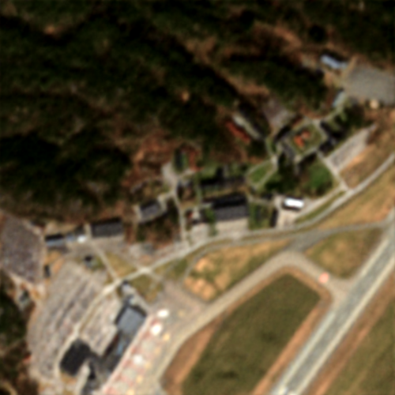
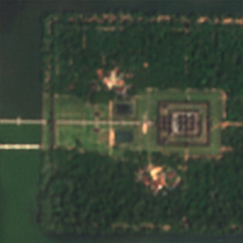

ZOOM AREA
Abstract
High-resolution imagery is often hindered by limitations in sensor technology, atmospheric conditions, and costs. Such challenges occur in satellite remote sensing, but also with handheld cameras, such as our smartphones. Hence, super-resolution aims to enhance image resolution algorithmically. Since single-image super-resolution requires solving an inverse problem, such methods must exploit strong priors, e.g. learned from high-resolution training data, or be constrained by auxiliary data, e.g. by a high-resolution guide from another modality. While qualitatively pleasing, such approaches often lead to hallucinated structures that do not match reality.
In contrast, multi-image super-resolution (MISR) aims to improve resolution by constraining the reconstruction with multiple views taken with sub-pixel shifts. We propose SuperF, a test-time optimization approach for MISR that leverages coordinate-based neural networks, also called neural fields. Their ability to represent continuous signals with an implicit neural representation (INR) makes them an ideal fit for the MISR task. The key characteristic of our approach is to share an INR for multiple shifted low-resolution frames and to jointly optimize the frame alignment with the INR. Our approach advances related INR baselines by directly parameterizing the sub-pixel alignment as optimizable affine transformation parameters and by optimizing via a super-sampled coordinate grid that corresponds to the output resolution. Our experiments yield compelling results on simulated bursts of satellite imagery and ground-level images from handheld cameras, with upsampling factors of up to 8. A key advantage of SuperF is that this approach does not rely on any high-resolution training data.
Why SuperF
SuperF is a neural-field approach to multi-image super-resolution that turns bursts and time series into photorealistic high-resolution imagery—without ever seeing high-resolution training data. We jointly optimize sub-pixel alignments with a shared implicit neural representation, so every frame contributes real signal instead of hallucinated texture.
Built for practitioners, SuperF shines on synthetic satellite bursts, handheld smartphone sequences, and real Sentinel-2 orbits. Drop it into your existing pipeline, let it optimize for a couple of minutes, and you get clean, high-frequency detail that previous test-time baselines miss.
Problem
Imaging systems from satellites to smartphones are constrained by optics, weather, and motion. Multi-image super-resolution captures bursts with natural sub-pixel shifts, embedding high-frequency detail across frames. However, prior approaches either rely on heavy training pipelines that hallucinate texture, or on classical test-time optimization that struggles to recover crisp structure.
SuperF bridges that gap: a neural implicit representation that you optimize only at inference time, aligning every frame and rendering a continuous, alias-free reconstruction of the scene.
Real bursts jitter — each LR frame samples the scene with different sub-pixel offsets and aliasing patterns.
Three transparent low-resolution frames jitter with sub-pixel shifts. When they overlap perfectly, they combine to create a clear, sharp image. Each frame uses a different low-resolution capture.
Methodology
SuperF formulates MISR as the joint optimization of a shared coordinate-based MLP and frame-specific alignment parameters. The INR takes continuous spatial coordinates and outputs RGB intensities, enabling a continuous representation of the scene while maintaining differentiability with respect to spatial transforms.
Shared Implicit Neural Representation (INR)
Everything revolves around a single coordinate-based MLP \(f_\theta\) that maps high-resolution coordinates to RGB values. This shared INR is the canvas on which all burst frames agree, so once it is optimized, rendering any viewpoint is just evaluation at continuous coordinates.
Joint alignment optimization
For each burst frame we learn a tiny affine transform (two translations + one rotation) relative to a base frame. These alignment parameters are optimized together with \(\theta\), turning jitter into precise sub-pixel shifts that enrich the INR.
Supersampled supervision
We query the INR on a dense HR grid, average-pool the predictions down to LR, and match them to the observed pixels. This supersampling bridge lets us recover detail beyond the LR pixel lattice without hallucination.
Fourier feature encoding
A Fourier positional encoding feeds the MLP with rich frequency bases, preventing spectral bias so SuperF can learn the high-frequency signals that multi-image super-resolution depends on.
Multiple low-resolution frames are fused into a single high-resolution reconstruction through the shared INR. The animation shows how misaligned burst frames converge and stack to create the final output.
Optimization Objective
Let \(y_{LR}^{(t)}\) denote the \(t\)-th low-resolution frame sampled on grid \(\mathcal{W}\), and let \(\hat{A}^{(t)}\) be the affine transform aligning the frame to the base coordinate system. The INR produces high-resolution values \(f_\theta(\hat{A}^{(t)}v)\) for coordinates \(v\) on the dense grid. A fixed box filter \(\varphi\) corresponds to average pooling between HR and LR grids. SuperF minimizes:
$$ \mathcal{L}(\theta, \{\hat{A}\}) = \frac{1}{T} \sum_{t=1}^{T} \sum_{v \in \mathcal{W}} \ell \left( \varphi * \hat{\rho}^{(t)} \left( f_{\theta}(\hat{A}^{(t)}v) \right), y_{LR}^{(t)}(v) \right) $$
where \(\hat{\rho}^{(t)}\) is a lightweight per-frame spectral projection (scale and bias per channel) that accounts for photometric differences across frames. Optimization uses AdamW with cosine learning-rate decay over 2k iterations.
Robustness & Uncertainty
Real-world data is messy. Clouds, shadows, and seasonal drift violate standard MISR assumptions. SuperF uses a Gaussian Negative Log-Likelihood (GNLL) loss to predict pixel-wise uncertainty.
Results
SuperF consistently beats the best publicly available test-time methods—delivering sharper detail, lower perceptual error, and rock-solid alignment across every dataset we tried.
- Handles upsampling factors up to ×8 on synthetic bursts with clean, alias-free detail.
- Generalizes from simulation to real Sentinel-2 time series, delivering 5× zoom-ins on critical infrastructure and landscapes.
- Runs entirely at test time; just provide a burst, let SuperF optimize for 2k steps, and export the high-resolution render.

Low-Res Input
(Nearest Neighbor)
SuperF Output
(Ours)
Input
Ours
Handheld burst (Kjevik)


Input
Ours
Satellite burst (Island)
Timelapse
Watch SuperF reconstruct high-resolution detail over time as the optimization progresses. Each frame shows the evolving reconstruction during test-time optimization.
Frame 1 / 30
Kjevik
Island
Roundabout
The timelapse shows the progressive refinement of the high-resolution reconstruction throughout the optimization process.
Interactive Demo
Try SuperF in your browser: upload your burst, watch the joint alignment converge, and inspect the super-resolved render directly. The demo runs a lighter-weight configuration so you can get a feel for the workflow before running the full-resolution scripts locally.
Citation
@article{superf2026,
title={SuperF: Neural Implicit Fields for Multi-Image Super-Resolution},
author={Anonymous},
journal={Under Review (ICLR)},
year={2026}
}